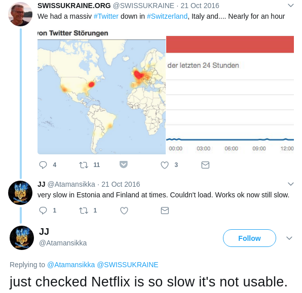
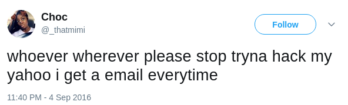
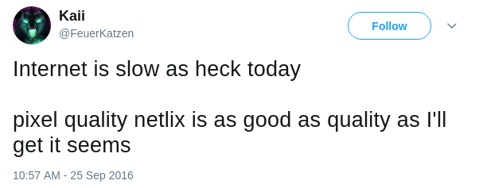
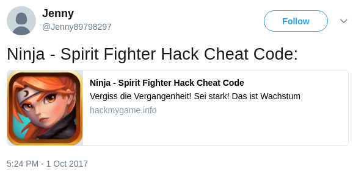
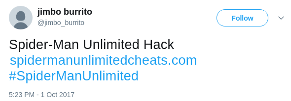
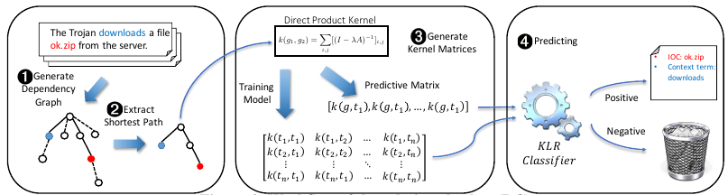

Cyber-attack Detection and Characterization Using Social Media
Posted by Taoran Ji
Recent years, cyber-attacks are gaining increasing attention from the public
because these attack events are occurring more frequently, with greater
scale and more severe damage or influence. In fact, last year, in a lot of
news report for data crime, we can see the words "biggest", "largest" or
"in the history". In particular, only in 2016, we saw Democratic National
Committee (DNC) email leak which revealed a sophisticated understanding of
politics, Yahoo data breach which affected over 1 billion accounts, massive
DDoS attacks targeting major DNS provider Dyn which impacts the Internet
service in the US east. In the last several months of 2017, we saw the
WannaCry which spread around the world, and Equifax data breach which leaked
around 143 million sensitive information including social security numbers
and other personal information. The leaked data from government agencies and
large enterprises like Equifax are usually sensitive personal information
which may cause further loss of personal property.
Unfortunately, though leaked data may cause further cyber crimes,
organizations being attacked usually choose not to notify the public at the
first time due to business factors, and it may take very long time for the
news report to be involved since they have to collect information which
originates outside these organizations. For instance, Yahoo data breach,
occurring earlier around August 2013, was only reported in December 2016
though it affected over 1 billion user accounts.
In response to the situations mentioned above, cyber-attack detection and
characterization using social media, as a research interest, aims to detect
and characterize the ongoing or happened cyber attacks by leveraging
conversations and discussions posted on the public social media platforms
like Facebook and Twitter. In this blog post, I'll reveal the motivation of
the usage of social media and explore the several works done by other
researchers.
Motivation: Why use social media?
The motivation of using social media data is that people will report or
complain about the abnormal behaviors (eg., login location and time) of
their account as well the unhappy user experience of internet services,
which can be potential indicators for an ongoing cyber attack. For instance,
on Oct 21, Spotify, Netflix along with other online websites suffered a mass
DDOS attack which dramatically impacts the access speed. The following
screenshots are people reporting and complaining about slow internet on
Twitter.



Another case is Yahoo data breach. As I mentioned, though Yahoo data breach
occurred earlier around August 2013, it was officially confirmed in December
2016 which is over three years later. On Twitter, there already have many
signals showing that many users' Yahoo accounts have abnormal login
behaviors, as shown in figures below.



In fact, social media, which is believed to have the ability to turn users
into social sensors and empower them to participate in an online ecosystem,
has been used in many event detection tasks such as disease outbreaks, civil
unrest, and earthquakes. Thus, intuitively, we believe that analysis of such
online media can provide insight into a broader range of cyber-attacks such
as data breaches, account hijacking.
Exploration of Solutions
It seems that the problem can be easily solved by mining tweets which
contain some keywords about cyber-attack events. What a straightforward,
simple and beautiful method! But it will never work. Come on. This is social
media we are talking about. It never works as you think. Working in social
media data is never a trivial task considering the noisy environment
provided by the online platform. On Twitter, people will use slang, informal
language, hashtags, make up words and misspellings are common things.


What do you see in the above two tweets? Netlix,
Twier, #twitterislife and slow. They are
signals what we want, but the machine doesn't know what's Netlix, Twier or
#twitterislife since they are not in the dictionary. What's more, even
though Twitter users write tweets very carefully and double check the
spelling before posting, it still won't work. Every word can be ambiguous
online. The following two tweets show that how keyword hack
is used to express the different meaning.


Now let's see other researchers' work. Most existing work focuses on
technology blogs and tweets from security professionals to extract useful
information. For instance, Liao et al. build text mining tools to extract
key attack identifiers (IP, MD5 hashes) from security tech blogs in their
paper "Acing the IOC Game: Toward Automatic Discovery and Analysis of
Open-Source Cyber Threat Intelligence".
IOC Game
This paper focuses on the automatic discovery and analysis of IOC
(Indicators of Compromise) information presented by security professionals
in public sources (e.g., blogs, forums, tweets, etc.). In particular, the
authors propose iACE, a framework which can locate an IOC token, get its
context, and further analyze their relations through NLP techniques. The
following figure is iACE's architecture.

As we can see, the system keeps collecting technical blogs using Blog
Scraper (BS), which is essentially a web crawler designed to monitor the
rapidly evolving online content. Though technical blogs are less noisy than
the Twitter environment, there are still many materials unrelated with IOC,
e.g., product promotion, news or software update. Thus Blog Preprocessor
(BP) is required to perform pre-processing on the data collection to extract
and normalize only technical related content from crawled pages and filter
out non-IOC articles. Relevant Content Picker (RCP) will further use context
terms and regexes to locate the sentences likely to contain IOC information.
In a nutshell, for each IOC blog, BP and RCP's job is to identify and pick
sentences, tables, and lists which are likely to include IOCs. Though
context terms and regexes can help to find sentences likely involving IOCs,
they are insufficient for detection IOCs with high accuracy. Therefore in
Relation Checker (RC), dependency tree technique is adopted to improve the
accuracy. In participate, the presence of IOC relations between a context
term and an IOC candidate within a sentence is examined though a customized
kernel classifier which calculates the similarity between two dependency
subgraphs based on the point-wise distance. The RC workflow is shown below.

In the evaluation, the authors run their framework on 71,000 articles
collected from 45 technical blogs and get a remarkable performance. iACE
generates 900K OpenIOC items with a precision of 95% and a recall over 90%,
which overperforms other state-of-the-art approaches. In summary, one major
technical contribution of this paper is to use dependency parser to identify
the IOC item instead of using context terms or regexes alone, and it does
dramatically improve the identification accuracy.
Afterword
Cyber-attack detection and characterization using open-source data is still
a new but interesting research problem. It's based on the assumption that
security professionals or normal web service users will exchange, share
their knowledge, experience, and information through social media.
Furthermore, the assumption is also proved to work in other papers, e.g.,
"Vulnerability Disclosure in the Age of Social Media: Exploiting Twitter for
Predicting Real-World Exploits" and "Weakly Supervised Extraction of
Computer Security Events from Twitter". Anyway, this problem can be further
divided into several more detailed subproblems, e.g, what information to
extract from open source data like IOC item, named entitied, how to get the
target "particle", and how to use extracted knowledge elements.